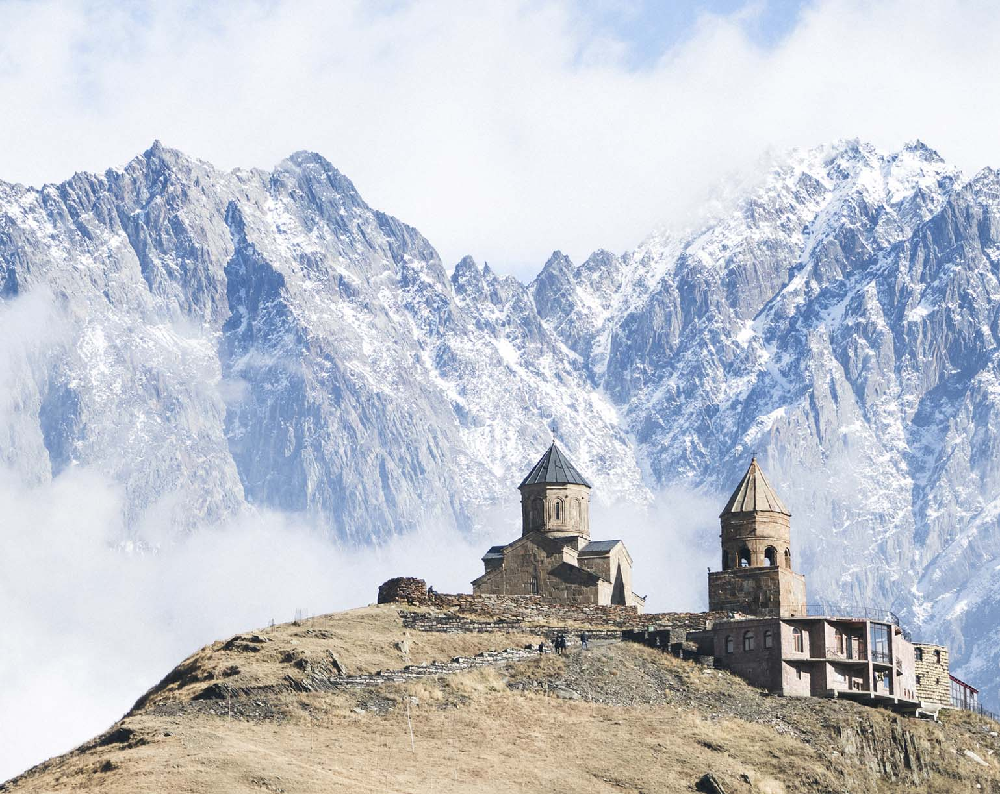
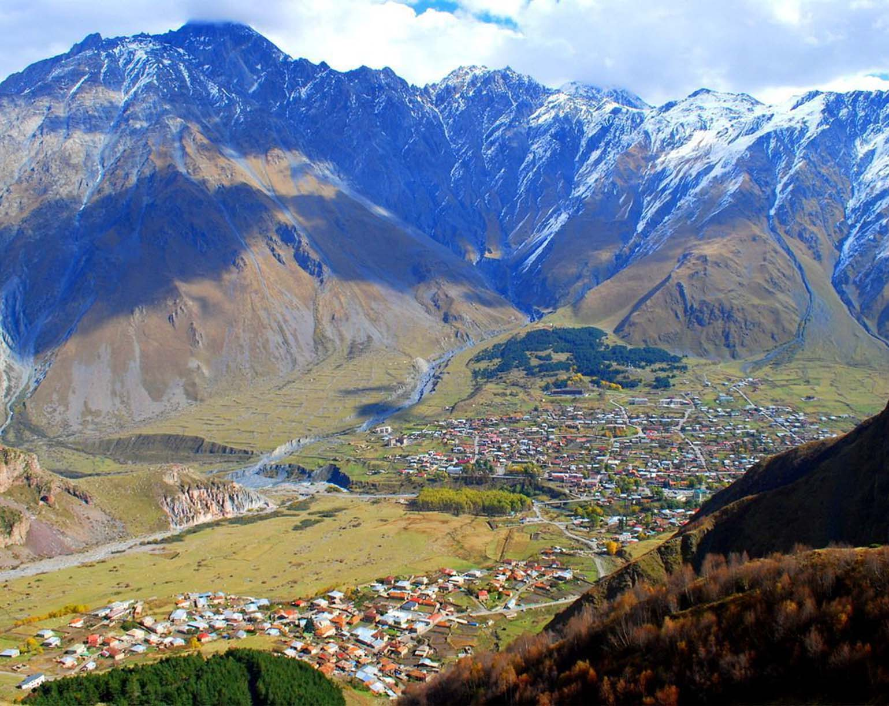

Казбеги (Степанцминда)
Казбеги в Грузии – красивейший горный уголок, предлагающий отдых на любой вкус. Вершина Казбека и крутые тропы привлекают альпинистов, велосипедистов и любителей горного туризма. Целебный чистый воздух и вода из местных минеральных источников являются эффективными природными факторами для лечения и оздоровления. И, конечно, никого не оставят равнодушным уникальные природные достопримечательности и древние исторические памятники Казбеги.
Кратко о Казбеги
Казбеги в Грузии назывался так с 1927 по 2007 г., после чего был переименован в Степанцминду. Административный центр Казбегского района и единственный город в области Мохэве с населением 1850 человек очаровывает красотой горных пейзажей. Центральная улица Казбеги заканчивается обрывом, под которым протекает Терек, а окраины города напоминают Тибет. Здесь можно отдохнуть в горной прохладе от тбилисской жары, заняться альпинизмом и другими видами спорта, оздоровиться и просто насладиться покоем и величественной красотой гор.
Казбеги в Грузии – небольшой, но очень живописный городок, окруженный величественными горами Большого Кавказа. Казбеги или Степанцминда раскинулся у подножья легендарного Казбека, на левом берегу Терека и прямо на Военно-Грузинской дороге. Благодаря своему расположению Казбеги предлагает прекрасные возможности для активного отдыха. Именно отсюда начинается маршрут восхождения на Казбек, взмывающий на высоту 5033,8 м. Имеются и другие маршруты для альпинистов, а также для треккинга, горных велосипедов и мотокросса. Предлагаются полеты на параплане с инструктором, прогулки на лошадях и рафтинг на быстрых горных реках региона.
Чистый горный воздух и солнечная погода Казбеги являются идеальными климатическими условиями для лечения заболеваний органов дыхания. Кроме того, в 2 км от города, в местечке Паншети находятся минеральные источники с целебной водой, которая эффективно используется при лечении болезней желудка. Здесь же работает завод по розливу лечебно-минеральной воды «Казбеги».
Непременно стоит увидеть красивейшие места Казбеги и его окрестностей. Это и великолепные Гвелетские водопады, низвергающиеся с 25-метровой высоты, и «Ворота Кавказа» – Дарьяльское ущелье, воспетое Пушкиным и Лермонтовым. Ущелье реки Терек, протянувшееся на 3 км, обступают скалы высотой почти километр, а внутри него находится тоннель, по которому проходит российско-грузинская государственная граница. Здесь же расположена средневековая крепость Дариалисцихе. Недалеко от города находится смотровая площадка «Монумент дружбы народов Грузии и России» с фантастическим видом на Кавказские горы.